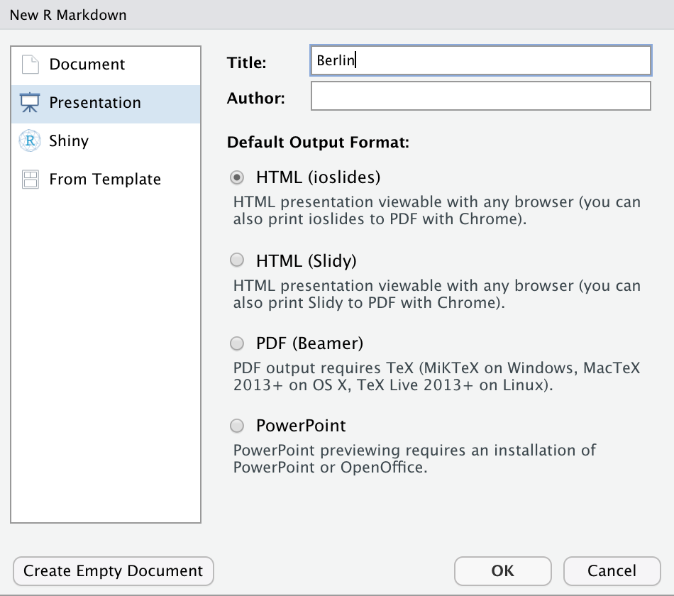

Slides
|
Reporting mit R The R Bootcamp |

|

from dvisiondesign.net
Überblick
In diesem Practical wirst aus deinem fertigen HTML RMarkdown Dokument eine Präsentation erstellen. Am Ende des Practicals kann du:
- Eine HTML Präsentation mit
iosslideserstellen und Inhalte mit RMarkdown Code einfügen. - Ein Logo einfügen und das Layout der Präsentation anpassen.
- Du wirst HTML Tags und CSS (Cascading Style Sheets) für die Feinjustierung der Slides verwenden.
Aufgaben
A - Setup
Öffne dein
TheRBootcampR Projekt. Es sollte die Ordner1_Data,2_Assets, und3_Markdownenthalten.Öffne ein neues RMarkdown Skript und wähle das Presentation - Template “HTML” aus (siehe screenshot unten).

Trage als Titel
Berlinein.Lösche alles unterhalb des
setupR chunks.Speichere das neue Markdown Skript unter dem Namen
presentation_practical.Rmdim3_MarkdownOrdner ab.
B - YAML
Im YAML Header wirst du nun die generellen Einstellungen des Dokumentes anpassen.
- Füge unter
title: Berlin, in einer neuen Zeilte, einen Untertitel ein.
subtitle: "Bericht: 18/19"- Um ein Logo automatisch auf dem Titelslide und in der Fusszeile jedes Slides anzuzeigen, gib an wo das Logo abgelegt ist und integriere es im YAML Header.
logo: ../2_Assets/airbnb.png- Um das Layout (Schrift, genaue Position der Komponenten) im Detail zu gestalten, füge den Link zu einem CSS file in der nächsten Zeile ein.
css: ../2_Assets/airbnb_presentation.css- Achte auf die korrekten Einrückungen! Der YAML Header sollte so aussehen:
---
title: "Berlin"
subtitle: "Bericht 18/19"
output:
ioslides_presentation:
logo: ../2_Assets/airbnb.png
css: ../2_Assets/airbnb_presentation.css
---Knittedas Dokument. Es sollte ein, in den AirBnB Farben gestalteter Titelslide angezeigt werden, mit rote, AirBnB Logo.
C - Setup chunk
Nun wirst du im Setup Chunk die notwendigen Pakete laden, Daten laden und verschiedenen Einstellungen vornehmen.
- Ersetze in
knitr::opts_chunk$setinclude=FALSEmit folgenden Einstellungen:
echo = FALSE, message = FALSE, warning = FALSE- Lade die folgenden Pakete:
library(tidyverse)
library(lubridate)
library(sjPlot)
library(knitr)
library(kableExtra)- Integriere die Daten aus dem AirBnB Datensatz für den Zeitraum 2018-2019.
# Lade Daten
airbnb_1819 <- read_csv('../1_Data/airbnb.csv') %>%
filter(Erstellungsdatum > "2018-01-01",
Erstellungsdatum < "2019-12-31")- Passe das Grafik Theme für
ggplotan. Damit veränderst du den Hintergrund aller Grafiken und optimierst die Schriftgrösse der Grafiken.
# Ändere Thema zu minimal
theme_set(theme_minimal())
theme_update(panel.background = element_rect(fill = "transparent", colour = NA),
plot.background = element_rect(fill = "transparent", colour = NA),
axis.title.x = element_text(size = 16),
text = element_text(size=19))- Für die
ggplotGrafiken wirst du nun noch die Farben an die AirBnB Palette anpassen.
# Setze defaults in ggplot
ggplot <- function(...) ggplot2::ggplot(...) +
scale_fill_gradientn(colors = c('#555555','#6BB7B9')) +
scale_colour_gradientn(colors = c('#555555','#6BB7B9'))D - Nun geht es an das Erstellen der Slides
Füge nach dem
setupChunk in einer neuen Zeile “# Neueinstellungen” ein. Damit erstellst du deinen ersten Abschnitt mit grauem Hintergrund.Knittedas Dokument. Zu deinem Titelslide gibt es jetzt einen 2. Slide mit dem Titel Neueinstellungen.Für den ersten Slide mit Inhalt füge in einer neuen Zeile “## Entwicklung” ein.
Füge den folgenden Satz mit
inline codein der nächsten Zeile ein:
Seit `r strftime(min(airbnb_1819$Erstellungsdatum), "%d.%m.%Y")` wurden in Berlin:- In einer Liste mit Bullet Points ergänze die folgenden, zusammengefassten Informationen. Die
>Zeichen vor dem-bewirken ein schrittweises Einblenden der Bullet Points.
> - `r nrow(airbnb_1819)` Airbnb Wohnungen eingestellt
> - `r round(mean(airbnb_1819$Verfügbarkeit_90Tage > 0) * 100)`% haben Verfügbarkeiten von durchschnittlich ` round(mean(airbnb_1819$Verfügbarkeit_90Tage[airbnb_1819$Verfügbarkeit_90Tage>0]),1)` Tagen
> - 2019 wurden insgesamt `r n_2019 = sum(year(airbnb_1819$Erstellungsdatum) == 2019); n_2019` neue Wohnungen eingestellt
> - 2018 nur `wrap n_2018 = sum(year(airbnb_1819$Erstellungsdatum) == 2018); n_2018` Wohnungen eingestellt
> - Zuwachs: `wrap (round(n_2019/n_2018, 2) - 1)*100`%Knittedas Dokument. Auf dem 3. Slide sind deine Bullet Points zu sehen!Füge einen neuen slide mit dem Titel “Entwicklung” ein.
Auf diesem Slide soll die erste Grafik abgebildet werden. Füge dafür einen R Code Chunk mit der Grafik über die Neueinstellungen pro Monat ein.
{r fig.asp=.6, fig.cap = cap}
# Plotte Häufigkeiten
ggplot(airbnb_1819 %>%
group_by(Jahr = year(Erstellungsdatum),
Monat_tmp = month(Erstellungsdatum)) %>%
summarize(
Monat = as_factor(paste(first(Jahr), first(Monat_tmp), sep = '-')),
Wohnungen = n()),
aes(x = Monat, y = Wohnungen, fill = Jahr)) +
geom_bar(stat = 'identity', position = 'dodge') +
theme(legend.position = 'none',
axis.text.x = element_text(angle = 45, hjust = 1))
# Ergänze caption
cap = "<center>Abbildung 1. Neueinstellungen pro Monat</center>"Knittedas Dokument. Enthält Slide 4/4 die Grafik 1?
E - Zwei neue Slides mit Bullet Points und Grafik
Füge einen neuen slide mit dem Titel “Stadtteile” ein.
In einem R Code Chunk ergänze die folgenden Berechnungen
# Berechne Häufigkeiten über die Bezirke
stadtteile <- airbnb_1819 %>%
group_by(Stadtteil,
Jahr = year(Erstellungsdatum)) %>%
summarize(Wohnungen = n()) %>%
ungroup() %>%
arrange(desc(Jahr), Wohnungen) %>%
mutate(Stadtteil = as_factor(Stadtteil))
# Veränderung über die Stadtteile
veränderung = stadtteile %>%
group_by(Stadtteil) %>%
summarize(veränderung = (100 * (Wohnungen[Jahr == 2019]/Wohnungen[Jahr == 2018] - 1)) %>% round(1))
# Geringsten Veränderung
min_veränderung = veränderung %>%
slice(which.min(veränderung)) %>%
pull(veränderung)
# Stadteil mit der geringsten Veränderung
min_stadtteil = veränderung %>%
slice(which.min(veränderung)) %>%
pull(Stadtteil)
# Grösste Veränderung
max_veränderung = veränderung %>%
slice(which.max(veränderung)) %>%
pull(veränderung)
# Stadteil mit der grössten Veränderung
max_stadtteil = veränderung %>%
slice(which.max(veränderung)) %>%
pull(Stadtteil)- Als Slide Inhalt füge eine Liste mit Bullet Points und diesen Informationen eine:
> - Meisten Neueinstellungen: `r stadtteile %>% filter(Jahr == 2019) %>% pull(Stadtteil) %>% last()`
> - Wenigste Neueinstellungen: `r stadtteile %>% filter(Jahr == 2019) %>% pull(Stadtteil) %>% first()`
> - Grössten Reduktion mit `r min_veränderung`% in `r min_stadtteil`
> - Grösster Zuwachs mit `r max_veränderung`% in `r max_stadtteil` Füge einen neuen slide mit dem Titel “Stadtteile” ein.
Kopiere den folgenden Code für die 2. Grafik in dein Markdown Dokument.
# Plotte Häufigkeieten der Stadtteile
ggplot(stadtteile,
aes(y = Stadtteil, x = Wohnungen, group = Jahr, fill = Jahr)) +
geom_bar(stat = 'identity', position = 'dodge') +
theme(legend.position = 'none') + labs(y='')
# Ergänze caption
cap = "<center>Figure 2. Neueinstellungen pro Bezirk</center>"Knittedas Dokument. Wird die 2. Grafik korrekt angezeigt?
F - Neuer Abschnitt mit Tabelle und Regressionsergebnissen
Erstelle einen neuen Abschnitt mit dem Titel “# Preis” und einen neuen Slide mit dem Titel “## Einfluss der Ausstattung”
Füge einen R Chunk mit dem folgenden Code zur Berechnung der Ausstattungsmerkmale ein.
# Vector mit Ausstatttungsmerkmalen
ausstattung_var <- c('Küche','Wifi','TV','Kaffeemaschine',
'Geschirrspüler','Terrasse_Balkon',
'Check_in_24h')
# Bestimme Preise als Funktion der Ausstatttungsmerkmale
ausstattung <- airbnb_1819 %>%
select(all_of(ausstattung_var), Preis) %>%
pivot_longer(-Preis,
names_to = 'Ausstattung',
values_to = 'Ausstattung_vorhanden') %>%
group_by(Ausstattung) %>%
summarize(Nicht_vorhanden = mean(Preis[!Ausstattung_vorhanden]),
Vorhanden = mean(Preis[Ausstattung_vorhanden]),
Differenz = Vorhanden - Nicht_vorhanden,
Prozent_vorhanden = mean(Ausstattung_vorhanden) * 100) %>%
arrange(desc(Differenz)) - Erstelle eine Liste mit Bulletpoints, die die folgenden Berechnungen enthält:
> - Durchschnittliche Preis der Neueinstellungen `r round(mean(airbnb_1819 %>% pull(Preis)),1)` €
> - Anstieg der Preise um `r m <- mean(airbnb_1819 %>% filter(year(Erstellungsdatum) == 2019) %>% pull(Preis))/mean(airbnb_1819 %>% filter(year(Erstellungsdatum) == 2018) %>% pull(Preis)) ; round(m, 3) * 100 - 100`%
> - Grössten Unterschied im Preis `r ausstattung %>% pull(Ausstattung) %>% first()` (`r ausstattung %>% pull(Differenz) %>% first() %>% round(1)`)
> - Kleinster Unterschied im Preis `r ausstattung %>% pull(Ausstattung) %>% last()` (`r ausstattung %>% pull(Differenz) %>% last() %>% round(1)`)Füge einen neuen Slide mit dem Titel
Einfluss der Ausstattungein.Auf diesem Slide, zeige die Tabelle mit den Austattungsmerkmalen
# Plotte Tabelle mit Austattungsmerkmalen
ausstattung %>%
mutate_if(is.numeric, function(x) {
cell_spec(round(x,1), bold = T,
font_size = spec_font_size(x, begin=14, end=22))}) %>%
mutate(Ausstattung = cell_spec(Ausstattung, font_size=18)) %>%
kable(digits = 2,
format='html',
caption = 'Tabelle 1. Ausstattung und Einfluss auf den Preis',
col.names = c('', 'Preis<br>Nicht-vorh.', 'Preis<br>vorh.','Differenz','Prozent<br>vorh.'),
escape = FALSE,
align="lcccc",
padding = 0) %>%
column_spec(c(2,3,4,5), width = "1.2in") - Auf dem gleichen Slide, unter der Tabelle, füge folgenden Text in fetter Schrift ein:
<br>
<b>Der stark negative Effekt der Küche überrascht.
Er könnte durch die Art der Unterkunft moderiert werden, gegeben dass auch
Hotels im Angebot enthalten sind.</b> Knittedas Dokument. Werden die beiden neuen Slides mit der Tabelle korrekt angezeigt?Füge eine neuen Slide mit dem Titel “Regressionsmodell” ein.
Ergänze den folgenden Code für die Berechnung der durchschnittlichen Anteile der Hotels.
# Bestimme Anteil Hotels in 2018 und 2019
hotel <- airbnb_1819 %>%
group_by(year(Erstellungsdatum)) %>%
summarize(Anteil = mean(Unterkunftsart %in% c('Boutique hotel', 'Hotel'))) - Definiere die Liste der Ausstattungsmermale und sage den Preis mit diesen Ausstattungsmermalen in einer Regression vorher.
# Reduzierter Vektor mit Ausstattungsmerkmalen
ausstattung_var <- c('Küche','TV','Terrasse_Balkon','Check_in_24h')
# Rechne Regression des Preises auf Austattungsmerkmale und Hotel
ausstattung_mod <- airbnb_1819 %>%
mutate(Hotel = Unterkunftsart %in% c('Boutique hotel', 'Hotel')) %>%
select(Preis, Hotel, all_of(ausstattung_var)) %>%
lm(formula = Preis ~ .)Füge die Ergebnisse der Regression, mit Hilfe der Funktion
tab_modelein.Ergänze in fetter Schriftart die abschliessenden Sätze direkt unter der Regressionstafel.
<br>
<b>Der Anteil von Hotels ist von `r (hotel$Anteil[1]*100) %>% round(1)`% im Jahre 2018 auf
`(hotel$Anteil[2]*100) %>% round(1)`% im Jahre 2019 gestiegen. Es liegt nahe, dass der
Anstieg im Anteil der Hotels, den Anstieg der Objektpreise verursacht hat. Datensatz
Der airbnb.csv Datensatz enthält Zahlen zu 9868 Berliner Airbnbs
| Variable | Beschreibung |
|---|---|
| Preis | Preis pro Nacht |
| Erstellungsdatum | Eröffnungsdatum des Airbnbs |
| Unterkunftsart | Appartement, Loft, House, etc. |
| Schlafplätze | Anzahl Schlafplätze |
| Schlafzimmer | Anzahl Schlafzimmer |
| Badezimmer | Anzahl Badezimmer |
| Reinigungsgebühr | Reinigungsgebühr |
| Verfügbarkeit_90Tage | |
| Viertel | In welchem Viertel befindet sich das Airbnb |
| Stadtteil | In welchem Stadtteil befindet sich das Airbnb |
| Breitengrad | Breitengrad |
| Längengrad | Längengrad |
| Host_id | Host id |
| Host_seit | Erfahrung des Hosts |
| Host_antwortzeit | Host Antwortzeit |
| Host_antwortrate | Host Antwortrate |
| Host_superhost | Superhost Ja/Nein |
| Host_anzahl | Anzahl Gäste |
| Rating_gesamt | Gesamtrating |
| Rating_genauigkeit | Genauigkeitsrating |
| Rating_sauberkeit | Sauberkeitsrating |
| Rating_checkin | Checkinrating |
| Rating_kommunikation | Kommunikationsrating |
| Rating_lage | Lagerating |
| Rating_wertigkeit | Wertigkeitsrating |
| Küche | Küche vorhanden TRUE/FALSE |
| Wifi | WLAN vorhanden TRUE/FALSE |
| TV | TV vorhanden TRUE/FALSE |
| Kaffeemaschine | Kaffeemaschine vorhanden TRUE/FALSE |
| Geschirrspüler | Geschirrspüler vorhanden TRUE/FALSE |
| Terrasse_Balkon | Terrasse/Balkon vorhanden TRUE/FALSE |
| Badewanne | Badewanne vorhanden TRUE/FALSE |
| Check_in_24h | 24h Check-In vorhanden TRUE/FALSE |
Funktionen
Paket
| Paket | Installation |
|---|---|
tidyverse |
install.packages("tidyverse") |
Funktionen
| Funktion | Paket | Beschreibung |
|---|---|---|
| |
Materialien
- …
- …